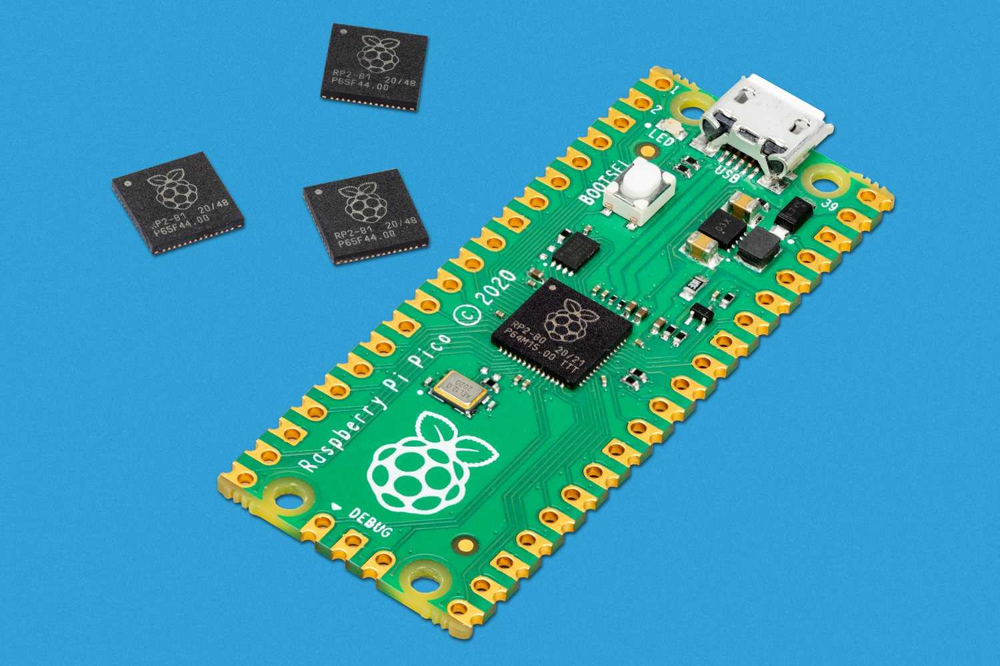

This project has taken all of my controls, networking, and mechanical design knowledge to pull off. I
started with powered wheel chair and replaced all of the electronics with microcontrollers and a
Linux computer. I prototyped many systems for localization of the robot, starting with a LIDAR based
system, then a inferred light based system, and finally settling on a computer vision based
approach. The computer on board uses computer vision and a camera onboard to track AURCO markers
applied to the ground and an Extended Kalman Filter to fuse the readings from the wheel encoders and
vision tracking. I developed an inferred laser gun to add interaction to the ride experience. The
ride vehicle and show systems all connect to a main computer to synchronize the ride experience.
A professional article I authored for See Water Inc., about my IOT based remote monitoring system
that I developed as an intern.

This robot, based on Disney's stickman robot, uses folding legs to mimic the motion of a human
acrobat. By closing it's legs at the right moment, the robot would able to slow down its
rotation and land flat on its back. I was able to get it working in simulation, but not in real
world trials.
This robot uses unique 5 bar linkage legs to navigate the world. The robot is able to walk
forward, but due to the cheap and inaccurate motors used, the robot has a hard time with any
other motions. I plan to revisit this project with a larger design and incorporating what I am
learning about lidar and 3D cameras to navigate obstacles.
This figure, which started it's life as a stuffed animal, incorporates 3 movements.
The lift is a custom designed rack and pinion system designed to be 3D printed as one part and
store
inside the figure when it is lowered.
The arm movement is lifts the arms to give the illusion that the figure is eating some of the
grass
in its hands.
The nose wiggle gives the effect of sniffing or eating grass depending on the animation and
sound
effects.
This project was the culmination of the development of my custom animation program, my arduino
based
control and audio system, and my mechanical design skills.
This figure incorporates a unique neck design with a compliant foam neck driven by 4 bowden
cables
and a 5th rotational axis. This allows for unique neck motion, such as moving the head
forwards and
backwards, in addition to tilting in any direction. This design was also my first experiment
creating functional and aesthetic 3D printed parts with the bird's head.

Since the first release of the Raspberry Pi Pico microcontroller to now, I've been writing
libraries to work with sensors and external components via standards like I2C, SPI, and PWM.
Working on this gave me the skills to program industrial microprocessor based control panels
and
SCADA systems.
This custom program to animate animatronics was integrated with my arduino based control
system.
It allowed for real time playback of the animation on the figure, automatic audio
synchronization, joystick control, timeline animation control, and saving the animation
directly
to the figure for independent playback.
Yabbit was my first animatronic, an alien with color changing eyes and the ability to spit on
you. This figure is where I started learning from puppet making tutorials to make the figure
itself. It is also where I first developed my animatronic control system and animator
program.

Based on a Disney patent, this mechanism uses electromagnets embedded within the animatronic
eye
to drive the animation of the eye without any motors behind it. This allows for much more
compact eye mechanisms.